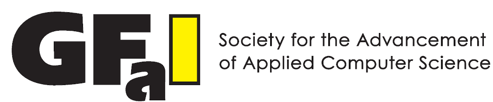

In Trusted IoT, the research is conducted by 5 parters from Belgium and Germany.
Belgian Partners
German Partners
Brandenburg University of Technology Cottbus-Senftenberg
Fachgebiet Technische Informatik
Marc Reichenbach

Gesellschaft zur Foerderung angewandter Informatik e.V.

Frank Püschel